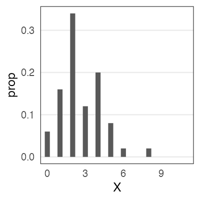
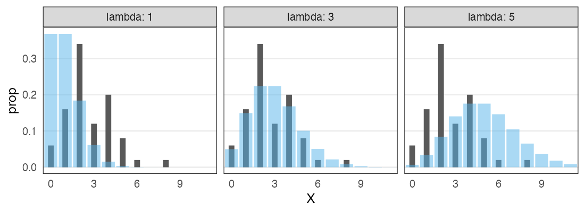
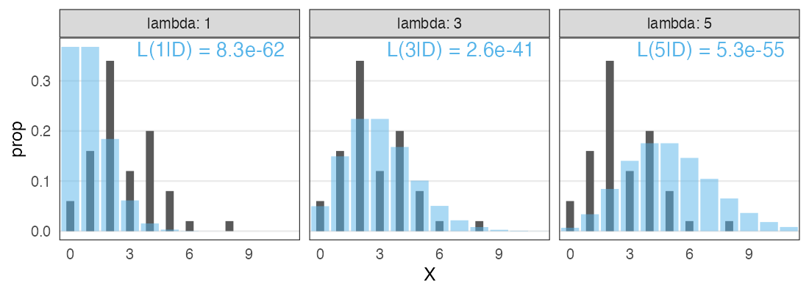
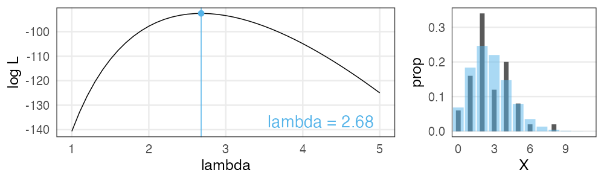
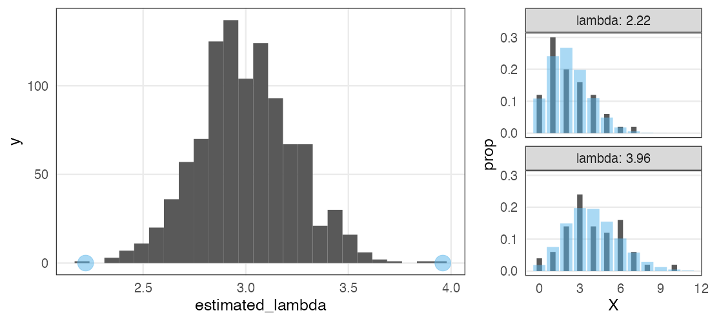
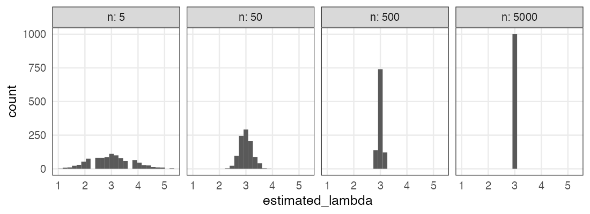

統計モデリング概論 DSHC 2023
(Graduate School of Life Sciences, Tohoku University)
- 導入
- 直線回帰、確率分布、擬似乱数生成
- 尤度、最尤推定
- 一般化線形モデル(GLM)
- 個体差、一般化線形混合モデル(GLMM)
- ベイズの定理、事後分布、MCMC
- StanでGLM
- 階層ベイズモデル(HBM)
https://heavywatal.github.io/slides/tokiomarine2023/
有名な確率分布対応関係ふりかえり

- 離散一様分布
- コインの表裏、サイコロの出目1–6
- 負の二項分布 (幾何分布 if n = 1)
- 成功率pの試行がn回成功するまでの失敗回数
- 二項分布
- 成功率p、試行回数nのうちの成功回数
- ポアソン分布
- 単位時間あたり平均$\lambda$回起こる事象の発生回数
- ガンマ分布 (指数分布 if k = 1)
- ポアソン過程でk回起こるまでの待ち時間
- 正規分布
- 確率変数の和、平均値。使い勝手が良く、よく登場する。
データに分布をあてはめたい
ある植物を50個体調べて、それぞれの種子数Xを数えた。
個体Aは種2個、個体Bは種4個、、、サンプルサイズ n = 50 のデータ。

カウントデータだし形もポアソン分布っぽい。
分布のパラメータ $\lambda$ はどれくらいがいいだろう？
データに分布をあてはめたい
ある植物を50個体調べて、それぞれの種子数Xを数えた。
個体Aは種2個、個体Bは種4個、、、サンプルサイズ n = 50 のデータ。

カウントデータだし形もポアソン分布っぽい。
分布のパラメータ $\lambda$ はどれくらいがいいだろう？
黒が観察データ。青がポアソン分布。 よく重なるのは $\lambda \approx 3$ くらいか。
尤度 (likelihood)
尤もらしさ。 モデルのあてはまりの良さの尺度のひとつ。
あるモデル$M$の下でそのデータ$D$が観察される確率。
定義通り素直に書くと
$\text{Prob}(D \mid M)$
データ$D$を固定し、モデル$M$の関数とみなしたものが尤度関数:
$L(M \mid D)$
モデルの構造も固定してパラメータ$\theta$だけ動かす場合はこう書く:
$L(\theta \mid D)$ とか $L(\theta)$ とか
尤度を手計算できる例
コインを5枚投げた結果 $D$: 表 4, 裏 1
表が出る確率 $p = 0.5$ と仮定:
表が出る確率 $p = 0.8$ と仮定:
$L(0.8 \mid D) > L(0.5 \mid D)$
$p = 0.8$ のほうがより尤もらしい。
種子数ポアソン分布の例でも尤度を計算してみる
$n = 50$個体ぶん、且つ、且つ、且つ、と確率を掛けていく:

この中では $\lambda = 3$ がいいけど、より尤もらしい値を求めたい。
最尤推定 Maximum Likelihood Estimation
扱いやすい 対数尤度 (log likelihood) にしてから計算する。
一階微分が0になる $\lambda$ を求めると…標本平均と一致。

最尤推定を使っても“真のλ”は得られない
今回のデータは真の生成ルール“$X \sim \text{Poisson}(\lambda = 3.0)$”で作った。
「50個体サンプル→最尤推定」を1,000回繰り返してみると:

サンプルの取れ方によってはかなりズレた推定をしてしまう。
(標本データへのあてはまりはかなり良く見えるのに！)
サンプルサイズを増やすほどマシにはなる
“$X \sim \text{Poisson}(\lambda = 3.0)$”からnサンプル→最尤推定を1,000回繰り返す:

Q. じゃあどれくらいのサンプル数nを確保すればいいのか？
A. 推定したい統計量とか、許容できる誤差とかによる。
すべてのモデルは間違っている
確率分布がいい感じに最尤推定できたとしても、
それはあくまでモデル。仮定。近似。
All models are wrong, but some are useful. — George E. P. Box
統計モデリングの道具 — まとめ
- 何はともあれ作図して俯瞰
- 確率変数 $X$
- 確率分布 $X \sim f(\theta)$
- 少ないパラメータ $\theta$ でばらつきの様子を表現
- この現象はこの分布を作りがち(〜に従う) という知見がある
- 尤度
- あるモデルでこのデータになる確率 $\text{Prob}(D \mid M)$
- データ固定でモデル探索 → 尤度関数 $L(M \mid D),~L(\theta \mid D)$
- 対数を取ったほうが扱いやすい → 対数尤度 $\log L(M \mid D)$
- これを最大化するようなパラメータ $\hat \theta$ 探し ＝ 最尤法
🔰 尤度の練習問題 @3-likelihood.ipynb
サイコロを10回振ったら6の目が3回出た。
- 6の目の出る確率が1/6だとした場合の尤度は?
- 6の目の出る確率が0.2だとした場合の尤度は?
- 横軸を6の目の出る確率、縦軸を対数尤度とするグラフを描こう。
- このサイコロで6の目が出る確率を最尤推定しよう。
数学で解ければ優。Rで見つければ良。目分量・勘で可。
- ヒント
- 確率pで当たるクジをn回引いてk回当たる確率、と同じ計算を使う。
- 数学の $\binom 5 2 = {}_5 \mathrm{C} _2 = 10$ はRでは
choose(5, 2)。
🔰 分布を当てはめる練習問題
- データの分布を描いてみる
- 理論分布のどれが当てはまりそうか検討する
- 理論分布を適当なパラメータで描いてみる
- 尤度を計算しつつ擦り寄せる
time label
1 0.1125739 A
2 0.3140102 A
3 0.3277063 A
4 0.6970379 C
--
597 231.2013532 A
598 232.1383628 B
599 232.4407758 C
600 232.7671255 B
trials hit
1 10 1
2 10 2
3 10 3
4 10 0
--
597 10 2
598 10 0
599 10 1
600 10 1
参考文献
- データ解析のための統計モデリング入門 久保拓弥 2012
- StanとRでベイズ統計モデリング 松浦健太郎 2016
- RとStanではじめる ベイズ統計モデリングによるデータ分析入門 馬場真哉 2019
- データ分析のための数理モデル入門 江崎貴裕 2020
- 分析者のためのデータ解釈学入門 江崎貴裕 2020
- 統計学を哲学する 大塚淳 2020